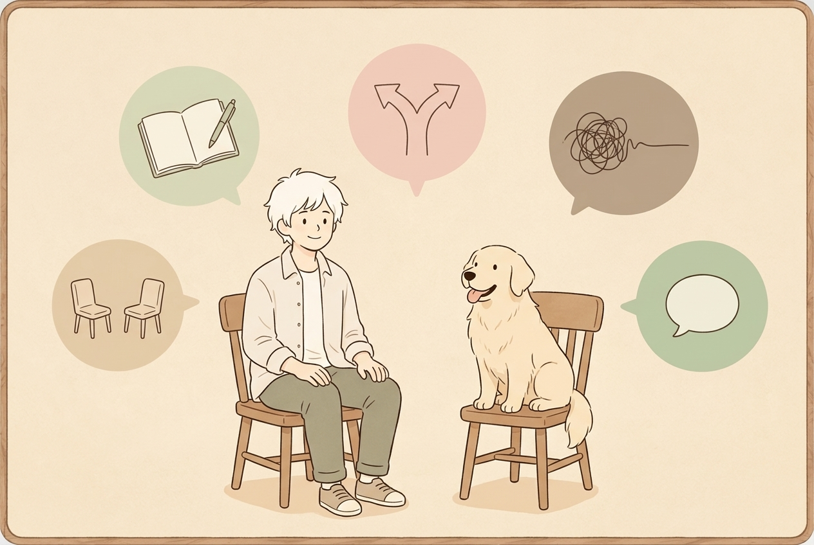

制度の説明や支援計画ではなく、まず「今の気持ち」を話す場所です。内容は、あなたが今困っていることに合わせて一緒に決めていきます。
言葉にするところから一緒に整理し、必要ならナビゲーションブックの形にまとめます。
どちらが正解ということではなく、判断の軸を一緒に整理します。
対人関係・再発・仕事の遂行能力への不安を、言葉にするところから始めます。
実際の面接に近い形で、模擬面接の練習をします。
何も準備しなくて大丈夫です。そのまま話してください。
上記のどれか一つでも、組み合わせでも、この中で対応します。
回数や時間、料金は内容に応じて前後するため、事前に必ずご案内します。
今の状況や、話したいことを一言だけ教えてください。ここまでは無料です。
一番話したいこと・整理したいことを一緒に確認し、進め方を決めます。
ビデオ通話で、決めた内容に取り組みます。顔出しなし・アイコン参加もOKです。
ナビゲーションブックなど、文書として残したいものはお渡しします。
うまく説明できなくても大丈夫。今の気持ちだけ持ってきてください。